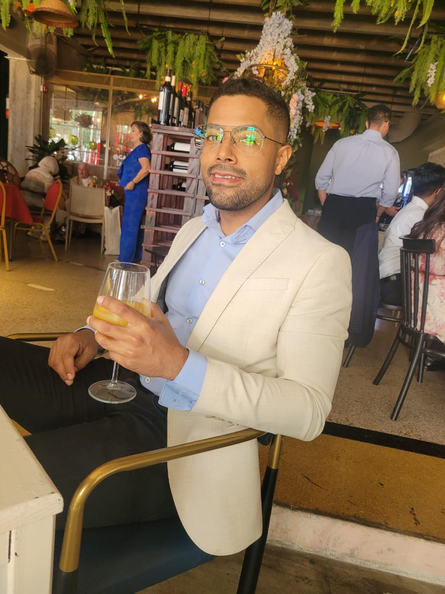

Mario tenía 34 años y una vida que parecía perfecta: un trabajo estable, amigos leales. Sin embargo, llevaba dentro de sí una tormenta silenciosa. Desde joven, había sentido una atracción tanto por hombres como por mujeres, pero siempre había escondido esa parte de sí mismo. A lo largo de los años, se casó con Thais, pero nunca pudo silenciar el deseo secreto que sentía por otros hombres.
Por las noches, cuando su esposa dormía, Mario desaparecía en aplicaciones de citas, buscando una desconexión, un espacio donde podía ser quien realmente era, sin juicio. Al principio pensó que eran solo momentos de escape, pero pronto se dio cuenta de que esos instantes lo estaban consumiendo, haciéndolo sentir más dividido que nunca.
La dualidad de su vida comenzó a hacerle daño. Sus dos identidades, el marido ejemplar y el hombre oculto, chocaban constantemente en su mente, dejándolo confundido y perdido. La ansiedad lo perseguía. Sentía que ya no sabía quién era realmente.
En busca de respuestas, Mario comenzó terapia. Allí, por primera vez, pudo hablar de su conflicto interno. El terapeuta le ayudó a entender que su identidad no era algo fijo, ni debía ser encasillado. No tenía que ser solo heterosexual o homosexual, podía ser ambas cosas, o incluso nada de eso. La aceptación de sí mismo no significaba encontrar una etiqueta, sino permitir que su ser se expresara sin miedo.
Aunque la lucha interna no desapareció de inmediato, Mario comenzó a hacer las paces con su identidad. Ya no tenía que vivir en dos mundos separados.
El viaje hacia la autoaceptación seguía siendo difícil, pero por primera vez, comenzó a sentir que podía ser él mismo, sin expectativas ni máscaras.